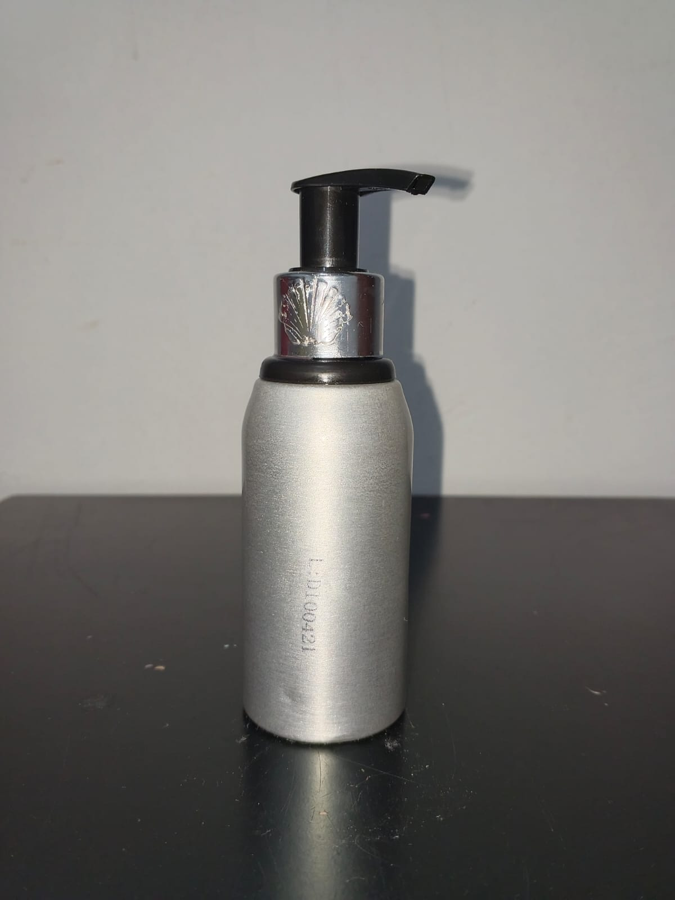

ShampooLite
Champú experimental – uso escolar
ShampooLite es un champú experimental elaborado a partir de una combinación de agua, Texapón, glicerina y azúcar. Su preparación permite conocer de manera práctica el proceso de elaboración de un producto de higiene personal.
🧪 Ingredientes para 100 mL
70 mL de agua
20 mL de Texapón
5 mL de glicerina
5 g de azúcar disuelta en una pequeña
cantidad del agua
🔬 Procedimiento
- Disuelve el azúcar en una pequeña cantidad del agua.
- Agrega el resto del agua lentamente.
- Incorpora el Texapón poco a poco, mezclando suavemente para no producir demasiada espuma.
- Añade la glicerina y mezcla hasta que quede uniforme.
- Deja reposar para que baje la espuma.
- Envasa y etiqueta como “Champú experimental – uso escolar”.
⚠️ Importante:
Producto elaborado con fines experimentales y educativos.
No está destinado para uso comercial.